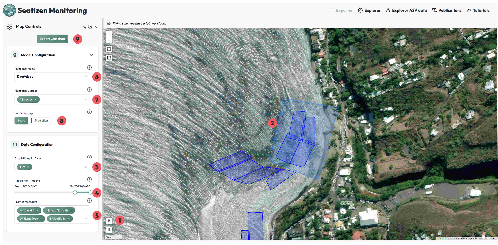

Télécharger un jeu de données depuis Seatizen monitoring avec zenodo-download
Ce tutoriel explique comment extraire un sous-ensemble du jeu de données SeatizenAtlas.
Extraction du sous-jeu de données

La page Explorer se compose de trois parties principales :
- la carte,
- la section Data Configuration,
- et la section Model Configuration.
Explication des éléments :
- Permet de délimiter une ou plusieurs zones sur la carte, dans lesquelles seules les images situées à l’intérieur seront exportées. ⚠️ Si aucune zone n’est dessinée, toutes les images affichées sur la carte seront exportées, ce qui peut prendre plusieurs minutes.
- Exemple d’une zone dessinée pour un export : ici, le regroupement de quatre sessions de planches au nord de Saint-Leu.
- Ce sélecteur permet de choisir les plateformes d’acquisition à prendre en compte. Il est possible d’en sélectionner plusieurs, chacune étant représentée par une couleur différente. La carte affiche uniquement les données des plateformes sélectionnées.
- Il est également possible de filtrer par période temporelle : la carte affichera uniquement les données comprises dans cette plage de temps.
-
Sélection des métadonnées à inclure dans l’extrait. Pour obtenir un sous-jeu de données complet, il est essentiel de conserver :
-
le champ
version_doi, qui indique l’adresse où la session est stockée en ligne, - et le champ
relative_file_path, qui correspond au chemin de l’image dans la session.
Nous passons maintenant à la section Model Configuration. Elle n’est pas nécessaire pour l’extraction des données, mais voici son fonctionnement :
- Permet de choisir un modèle de classification multilabel (non applicable aux images issues de drones).
- Sélection des classes à conserver pour le modèle multilabel.
- Choix du type de sortie : soit les scores de prédiction, soit les valeurs binaires (présence/absence) après application d’un seuil (threshold).
- Le bouton Exporter permet de télécharger le fichier CSV correspondant.
⚠️ Avertissement : Les prédictions présentées sur cette interface sont produites par un algorithme d’intelligence artificielle à titre informatif uniquement. Elles peuvent contenir des inexactitudes. L’éditeur de l’application décline toute responsabilité quant à leur interprétation ou leur utilisation.
Récupération des images
L’export génère un fichier CSV de ce type :
FileName,GPSLatitude,GPSLongitude,version_doi,relative_file_path
20231110_REU-ST-LEU_ASV-1_04_5_567.jpeg,-21.16281806626762,55.2865898413734,https://doi.org/10.5281/zenodo.12760339,20231110_REU-ST-LEU_ASV-1_04/PROCESSED_DATA/FRAMES/20231110_REU-ST-LEU_ASV-1_04_5_567.jpeg
20231110_REU-ST-LEU_ASV-1_04_5_990.jpeg,-21.16282476635246,55.28659116164465,https://doi.org/10.5281/zenodo.12760339,20231110_REU-ST-LEU_ASV-1_04/PROCESSED_DATA/FRAMES/20231110_REU-ST-LEU_ASV-1_04_5_990.jpeg
20231110_REU-ST-LEU_ASV-1_04_5_1409.jpeg,-21.162930832467936,55.28655471331759,https://doi.org/10.5281/zenodo.12760339,20231110_REU-ST-LEU_ASV-1_04/PROCESSED_DATA/FRAMES/20231110_REU-ST-LEU_ASV-1_04_5_1409.jpeg
...
Il existe deux façons de configurer l’environnement nécessaire au téléchargement des images à partir de Zenodo :
1. Utiliser un environnement Python
Vous pouvez suivre le guide d’installation détaillé disponible ici : 👉 README du dépôt GitHub
Cette méthode consiste à installer localement un environnement Python, puis à exécuter le script zenodo-download.py pour lancer le téléchargement.
Exceuter la commande : python zenodo-download.py -ecf -pcf /path/to/csv/file/provide/by/seatizen/monitoring -po /path/where/you/want/your/frames/folder
2. Utiliser Docker (recommandé pour la simplicité)
Si vous préférez éviter l’installation manuelle des dépendances, vous pouvez utiliser Docker Desktop. Après l’avoir installé, il vous suffit d’exécuter la commande suivante :
docker run -it --user 1000 --rm \
-v ./path/where/you/want/your/frames/folder:/home/seatizen/plancha \
-v ./path/folder/where/csv/file/provided/by/seatizen/monitoring:/home/seatizen/app/csv_inputs \
--name zenodo-manager seatizendoi/zenodo-manager:latest bash
Cette commande :
- télécharge automatiquement l’image Docker
seatizendoi/zenodo-manager:latest, - monte vos dossiers locaux (
plancha_testetinputs) à l’intérieur du conteneur, - et ouvre une session interactive prête à exécuter les scripts Zenodo Tools.
Une fois votre environnement prêt :
Executer la commande :
python zenodo-download.py -ecf -pcf /home/seatizen/app/csv_inputs/seatizen_monitoring.csv -po /home/seatizen/plancha
Vous disposez désormais :
- du fichier CSV crée par Seatizen Monitoring que vous pouvez importer dans QGIS pour visualiser la position exacte de chaque image,
- et d’un dossier
/path/where/you/want/your/frames/folder/Framescontenant l’ensemble des images téléchargées.